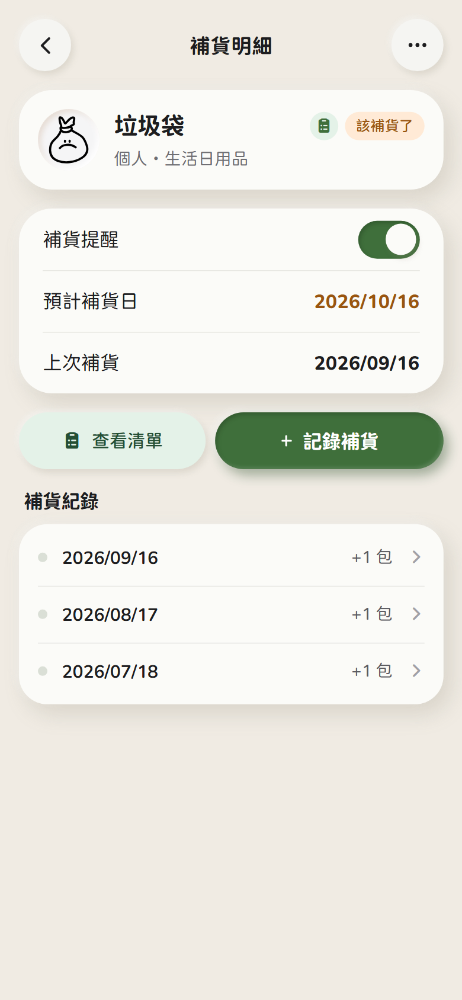
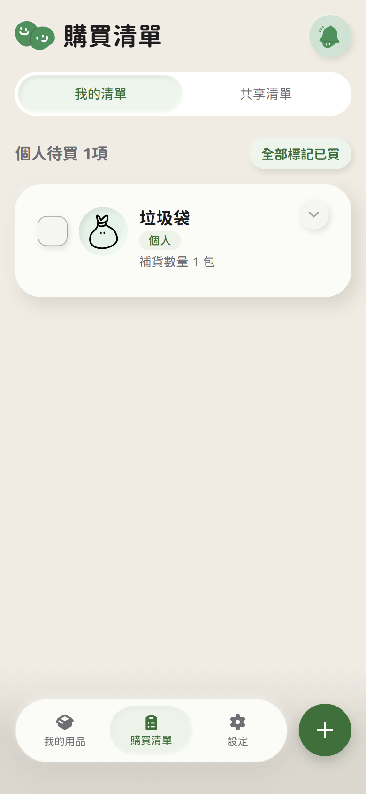
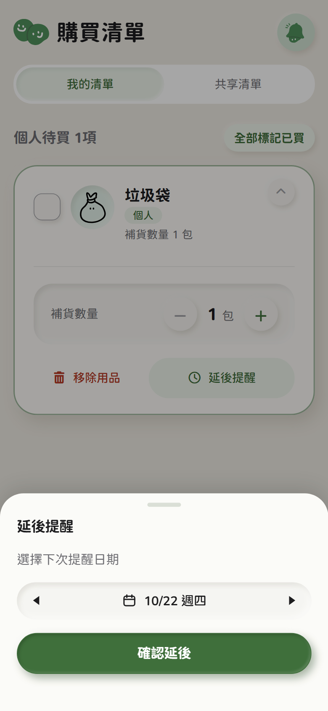
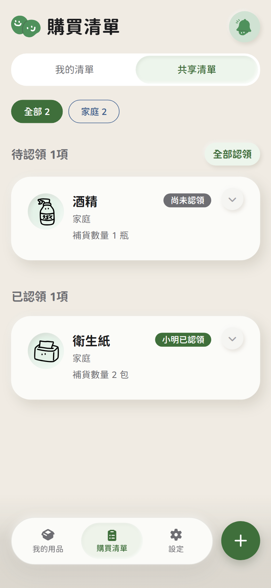
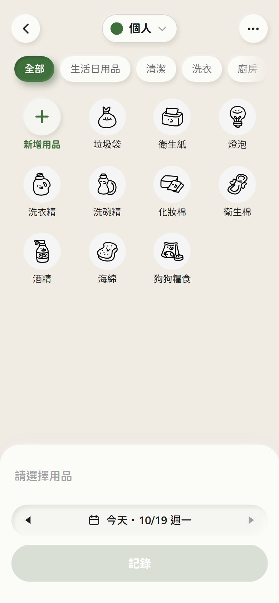

01
Problem Context
補貨需求常出現在無法立即購買的時刻；多人空間還需共享、認領與完成。
PROJECT 002 / UX CASE STUDY
HOME RESTOCK & SHARED NEEDS APP
[ 02 ]
From noticing a need to getting it done.
補補是一款居家消耗品補貨管理 App，協助使用者記下補貨需求、整理待買用品，並透過共享空間與購買紀錄，讓需求從發現延續到完成。
MY ROLE
UI/UX Design & Front-end Development
MY CONTRIBUTION
主要負責用品管理、補貨提醒與補貨紀錄相關功能的規劃及實作，包含用品列表與篩選、狀態規則、新增用品、補貨明細及記錄補貨流程。同時負責專案規格整理與設計決策紀錄，協助維持功能與開發方向的一致性。
01 / THE PROBLEM
INITIAL PROBLEM FRAMING
生活用品的補貨需求經常出現在不方便立即購買的時刻。當需求沒有被妥善保留，使用者就需要依靠記憶或反覆確認用品狀態，增加日常管理負擔。
對於多人生活空間，也需要考慮如何讓補貨需求被共享、認領與完成。
02 / RESEARCH / DISCOVERY
01
補貨需求常出現在無法立即購買的時刻；多人空間還需共享、認領與完成。
02
問卷 47 份（2026/9/18–9/19）與 6 位深度訪談（A～F），並比較 3 款競品與 LINE。
03
四項研究發現：察覺時機、買到前中斷、記錄負擔、責任交接。
04
對應三項使用者需求，提出三個設計機會。
47
份問卷回覆
2026/9/18–9/19，社群平台招募
6
位深度訪談（A～F）
2026/9/16–9/20，匿名呈現
4
項研究發現
三組主題：發現到買到、記錄負擔、多人交接
KEY RESEARCH FINDING
WHAT DID THE RESEARCH SHOW?
問題不只是用品快用完，而是知道要買的需求，常在真正買到之前中斷。
RESEARCH / KEY FINDINGS
01 — 04
01.
35/47 曾在用品用完或快用完時才發現需要補充；
是否急迫仍取決於備品、替代方案與生活情境。
02.
32/47 曾知道要買卻忘記；
用備忘錄或手機提醒的 18 人中，仍有 13 人曾忘記。
03.
8/47 想記錄卻覺得麻煩；
常見做法多不建檔：腦中記 28/47、口頭交代 14/47。
04.
共居 37 人中 6 人曾以為別人會買，
或不確定別人買了沒；問題多出在責任交接。
KEY TAKEAWAY
補補優先處理「知道要買，卻在買到之前中斷」的需求，而不只是提醒用品快用完。
DESIGN IMPLICATION / FROM INSIGHT TO DIRECTION
因此，補補以「先記下需求、適合購買時重新看見、買完留下紀錄」為主線，並在多人採買情境中提供認領與完成狀態。
SOURCE / PROPOSAL V2 · 02 使用者分析 樣本為本次問卷與訪談，不代表所有使用者比例
RESEARCH DETAILS / TO VERIFY
03 / DESIGN DIRECTION
DESIGN GOAL
降低記錄補貨需求的操作負擔，讓使用者即使無法立即購買，也能保留需求，並在之後順利完成。
SCOPE & TRADE-OFFS / 功能取捨
FOCUS / 設計重心
記下需求，而非盤點庫存
以補貨紀錄推算預計補貨日，不要求使用者逐一維護剩餘數量。
OUT OF SCOPE / 刻意不做
完整庫存盤點與複雜消耗推估
以降低記錄與維護負擔為優先，不列為主要流程。
DESIGN PRINCIPLES / 設計原則
01
快速記下需要補貨的用品。
02
讓尚未完成的需求持續可見。
03
在共享空間中整理多人需求，減少重複確認。
04
透過記錄補貨，讓需求具有明確完成狀態。
以上為設計原則與功能取捨，不代表所有功能已完成開發；目前尚未據此宣稱使用成效。
04 / CORE SOLUTION
以下皆使用補補實際 App 畫面（網頁版前端實作截圖），依序展示從察覺需求到完成補貨的四個關鍵時刻。
A / RECOGNIZE THE NEED

01 / 我的用品
DETAIL / 補貨明細：預計補貨日與狀態

預計補貨日由補貨紀錄推算；到達提醒門檻後，用品會顯示「該補貨了」。
A / RECOGNIZE THE NEED
當用品接近補貨時機，讓使用者更容易察覺需求。
畫面重點：我的用品列表以「該補貨了」標示接近補貨時機的用品；補貨明細顯示預計補貨日與上次補貨。目前為 App 內標示，尚未實作主動推播通知。
B / SAVE FOR LATER

01 / 購買清單

02 / 延後提醒
B / SAVE FOR LATER
即使當下不方便購買，也能先保存需求。
畫面重點：用品加入購買清單後，可調整待買數量；個人清單的項目可延後提醒並選擇下次提醒日期（最早為明天）。
C / SHARED SHOPPING

C / SHARED SHOPPING
讓多人生活空間中的補貨需求可以被共同查看與處理。
畫面重點：共享清單分為「待認領」與「已認領」，並標示認領者；可一次認領全部待認領項目。目前以單一裝置模擬成員，尚未連接後端與即時同步。
D / CLOSE THE LOOP

01 / 記錄補貨
02 / 補貨明細
D / CLOSE THE LOOP
完成購買後留下紀錄，讓補貨需求形成完整閉環。
畫面重點：記錄補貨可選擇用品與日期（預設今天）；補貨明細會累積補貨紀錄，作為預計補貨日的推算依據。
05 / FINAL DELIVERABLES
補補已完成手機尺寸的前端補貨流程（網頁版）與 Figma 設計稿。以下列出成果入口；尚未確認的連結已標示，不以未完成的內容替代。
以 Vue 3 與 Vite 實作的手機尺寸前端網頁，並非原生 App。資料保存於瀏覽器 localStorage，沒有後端；共享情境以單一裝置模擬成員。
STATUS / FRONT-END BUILD · NOT A PRODUCTION RELEASE
VIEW LIVE DEMO ↗
DEMO URL / TO CONFIRM
補補的前端原始碼與決策紀錄。公開展示的內容與完成狀態待確認。
REPOSITORY / PUBLIC · CONTENT TO CONFIRM
github.com/xiedailing/home-restock-app
06 / REFLECTION
DRAFT / TO REVIEW 以下為提案文案，待本人確認後修改
01 /
將「發現需要補貨，卻無法立刻購買」的生活情境，轉化為明確的產品需求：先留下需求，再讓它在適合的時機被看見並完成。
02 /
兩人合作需要先對齊規格與功能邊界，並在時程內取捨範圍；例如以補貨紀錄推算預計補貨日，而不追蹤完整庫存。
03 /
後續需要驗證互動流程、共享情境與提醒時機，並透過使用者測試確認使用者是否願意持續記錄，以及共享認領流程是否清楚。